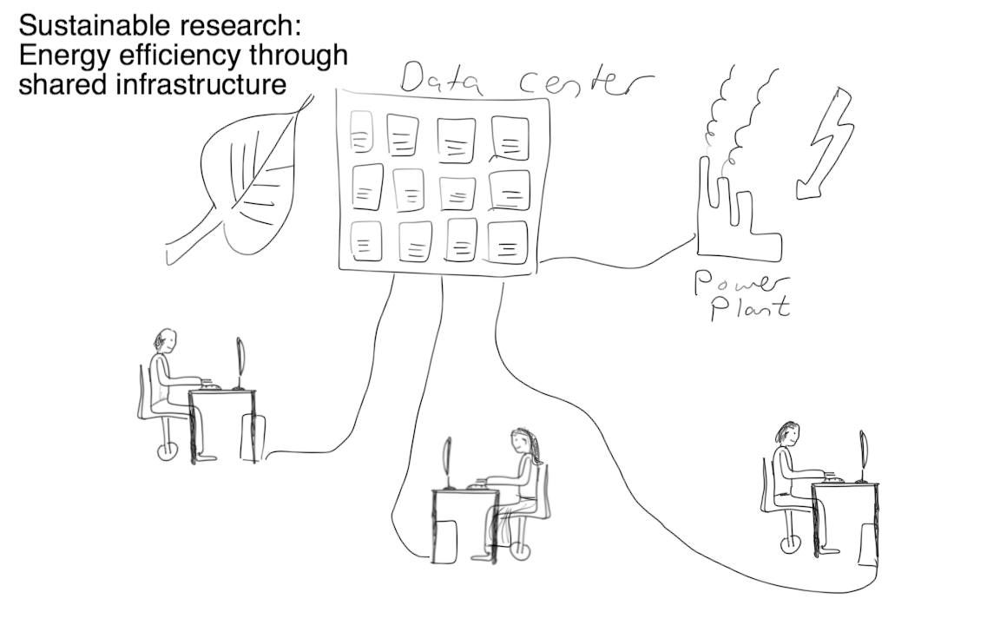

Module 1
Overview of cloud computing and the Nectar services
Sections of this module:
IntroductionCourse overview
What is Cloud Computing?
Cloud services
Virtualization
Common concerns
History
NeCTAR Services
Benefits for your research
Summary
View all sections on one page (Printer friendly)
Benefits for your research
Researchers are free to concentrate on their work rather than on obtaining funding for the computing resources, and spending time with provisioning & maintenance of hardware. The shared environment means greater ease and opportunity to collaborate.
The cloud’s flexibility offers new usage models for computing in research:
-
Computational requirements for research are usually ad hoc (e.g. before a deadline). For some computational models, the resource requirements increase by a very large extent only for a short time. For example, when some experiments need to be run before the paper is due. Cloud computing is flexible enough to support this model. For example, the weekend before a paper deadline, students start up hundreds of computers (virtual machines) to finish experiments in a short time. After the paper is submitted, these computers are “switched off” again (demanding no further costs and space in the lab, hence no lost capital investment).
-
Reproducible research aims at outcomes that can easily be reproduced at a later time or by someone else. With cloud computing, you can save the virtual machine which was used to perform experiments or an analysis: you can take a “snapshot” of your operating system, programs and data. You can even make this snapshot public, cite it in the paper and anyone can then run this virtual machine to reproduce the results.
-
In the classroom, each student may use their own isolated working environment (the VM) in which they install their own software, run jobs without contention, and break things without risk. Students can flexibly get access to virtual laboratories and materials from anywhere, e.g. their home PCs, laptop, etc. This will avoid universities having to invest in laboratory facilities and staff.
-
Cloud computing is highly suitable for effective collaboration. For example, your team can create a temporary shared development workspace in the cloud without risking security by providing access to university equipment.
-
The cloud meets your Big data demands: You can access very large amounts of storage.
What the future holds
Cloud computing is a major technological development. As it continues to grow and develop in the next years, more and more researchers will adopt it, because of the benefits it provides for collaborative, reproducible and cost-effective research in the digital age. By sharing infrastructure efficiently and thereby saving electricity, researchers aim at sustainable research which demands a lighter load of the environment.

Gaining the skills of using the cloud early on will give you expertise which will become increasingly relevant in the future. It will make your research more efficient, yielding outputs quicker and enabling collaborations which would otherwise take up a lot of time (e.g. due to exchange of many E-mails, communication, synchronization of results, etc).
Last but certainly not least, the growth of cloud computing may lead to Universities scaling back their local resources, so that gaining access to the computing and storage requirements you need for your research will become increasingly difficult. Using the cloud may become the most efficient and easiest way to gain access to the resources you require.
By taking this course, you are on your way to gain important skills of how to do research using the cloud services!

 This work is licensed under a
This work is licensed under a